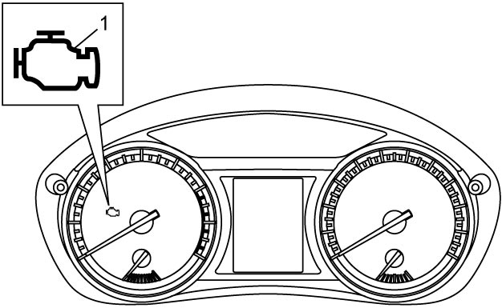
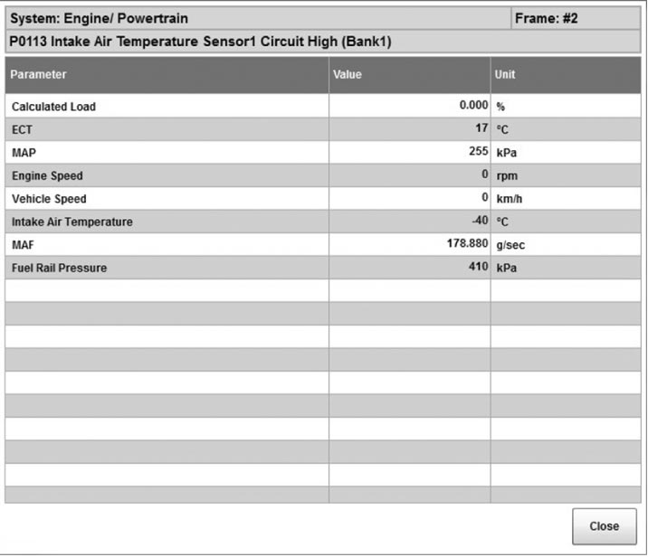
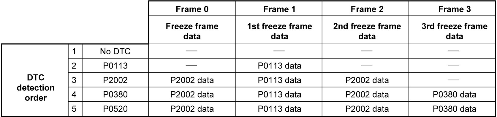

1A
| OBD System Description |
ECM in this vehicle has the following functions.
•When ignition is “ON”, MIL (1) turns ON to check the MIL and its circuit.
 •When ECM detects a malfunction which gives an adverse effect to vehicle emission while the engine is running, it makes the MIL in the meter cluster of the instrument panel turn ON and stores the malfunction area in its memory.
•When ECM detects a malfunction which gives an adverse effect to vehicle emission while the engine is running, it makes the MIL in the meter cluster of the instrument panel turn ON and stores the malfunction area in its memory.
•As a condition for detecting a malfunction in some areas in the system being monitored by ECM and turning on MIL due to that malfunction, 1 driving cycle or 3 driving cycle detection logic is adopted to prevent erroneous detection.

 "Expand image")
•As a condition for detecting a malfunction in some areas in the system being monitored by ECM and turning on MIL due to that malfunction, 1 driving cycle or 3 driving cycle detection logic is adopted to prevent erroneous detection.
Warm-Up Cycle
A “warm-up cycle” is defined in the OBD regulations to be sufficient vehicle operation such that coolant temperature rises by at least 22 °C (40 °F) from engine starting and reaches a minimum temperature of 60 °C (140 °F).
Driving Cycle
A “driving cycle” consists of two parts, engine startup and engine shutoff.
1 Driving Cycle Detection Logic
The malfunction detected in the first driving cycle is stored in ECM memory and MIL light up at the same time.
3 Driving Cycle Detection Logic
The malfunction detected in the first driving cycle is stored in ECM memory (in the form of pending DTC) but the MIL does not light at this time.
The MIL does not light up at the second detection of the same malfunction also in the second driving cycle. The MIL lights up at the third detection of the same malfunction also in the third driving cycle.
Pending DTC
Pending DTC means a DTC detected and stored temporarily at first or second driving cycle of the DTC which is detected in the 2 or 3 driving cycle detection logic.
Freeze Frame Data
ECM stores the engine and driving conditions at the moment of the detection of a malfunction in its memory.
This data is called “Freeze frame data”.
Therefore, it is possible to know engine and driving conditions (e.g. whether the engine was warm or not, whether the vehicle was running or stopped, whether air/fuel mixture was lean or rich) when a malfunction was detected by checking the freeze frame data.
Utilizing this function, it is possible to know the order of detection of these malfunctions.
This is helpful when rechecking or diagnosing a trouble. For details of freeze frame data that can be read from ECM, refer to table below.
| DTC |
| Calculated Load |
| ECT |
| MAP |
| Engine Speed |
| Vehicle Speed |
| Intake Air Temperature |
| MAF |
| Time Since Engine Start |
| Fuel Rail Pressure |
| Fuel Tank Level |
| Barometric Pres |
| Battery Voltage |
| Relative TP |
| Absolute APP 1 |
| Absolute APP 2 |
| Target Throt Pos |
| Turbocharger A Compressor Inlet Temperature @ |
| Turbocharger A Turbine Outlet Temperature @ |
| DPF Bank 1 Inlet Temperature Sensor @ |
| DPF Bank 1 Outlet Temperature Sensor @ |
Freeze frame data (For example)

 "Expand image")
Details of freeze frame data
ECM has 4 freeze frames from 0 to 3 where freeze frame data can be stored.
Frame 0 is a special frame where freeze frame data concerning emission-affecting malfunction has priority over data related to other (general) malfunctions.
Frames 1 to 3 are assigned to general malfunctions. They individually store the freeze frame data for 3 different general malfunctions in the order of detection. The data in these 3 frames are not updated, so freeze frame data for any malfunction detected subsequently are not stored anywhere.

 "Expand image")
Freeze frame data clearance
The freeze frame data is cleared at the same time as clearance of DTC.
System Readiness Test
The system readiness test is to check if on-board diagnosis of each system related to exhaust emission has been completed or not using a scan tool (SUZUKI scan tool or CAN communication OBD-II generic scan tool).
When the conditions established for each system are met, ECM performs an on-board diagnosis of corresponding system and changes the status of system readiness test from “Incomplete” to “Complete”. When “Complete” status is displayed, it is maintained until the “DTC clearance” is performed using scan tool.
NOTE:
•The status of system readiness test may be changed as “incomplete” when performing the following services.
•The system readiness test is NOT the result (“Normal” or “Abnormal”) of on-board diagnosis but the result (“Complete” or “Incomplete”) of on-board diagnosis.
—Disconnection of battery negative (–) cable
—Disconnection of ECM connectors
—Removal of ground cables for ECM
—Disconnection of “ECM” fuse
•By utilizing this system readiness test, it is possible to check that all DTC confirmation procedure for each system has been completed or incompleted. For all DTCs related to each system, refer to the table below.—Disconnection of ECM connectors
—Removal of ground cables for ECM
—Disconnection of “ECM” fuse
•The system readiness test is NOT the result (“Normal” or “Abnormal”) of on-board diagnosis but the result (“Complete” or “Incomplete”) of on-board diagnosis.
Monitor item of system readiness test table
| Monitoring item | DTC related to monitoring item | |||||||
|---|---|---|---|---|---|---|---|---|
| NOx aftertreatment | P2000 | |||||||
| Boost pressure system | P0237 | P0238 | ||||||
| Exhaust gas sensor | P0133 | P0139 | P2195 | P2196 | P2270 | P2271 | P2A00 | P2A01 |
| Particulate filter | P226D | |||||||
| EGR system | P010F | P0401 | P0402 | P0487 | P0488 | P046E | P213B | |